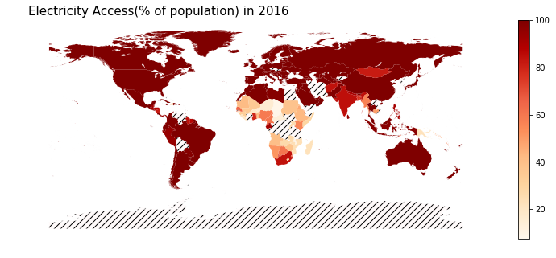

%matplotlib inline
import pandas as pd
import wbdata
import matplotlib.pyplot as plt
import datetime
data_date = (datetime.datetime(1990, 1, 1), datetime.datetime(2016, 1, 1))
df_elec = wbdata.get_data("EG.ELC.ACCS.ZS", pandas=True, data_date=data_date)In this post, I’ll explore electricity access, i.e. globally what fraction of people have access to electricity. Beyond the goal of finding the electricity access, this post will also serve to illustrate how the coolness coefficient of the Python visualisation ecosystem!
I’ll be using data from World Bank for electricity access. See the image below for the corresponding page.

Downloading World Bank data
Now, a Python package called wbdata provides a fairly easy way to access World Bank data. I’d be using it to get data in Pandas DataFrame.
df_elec.head()country date
Arab World 2016 88.768654
2015 88.517967
2014 88.076774
2013 88.389705
2012 87.288244
Name: value, dtype: float64Downloading Geodata and Reading Using GeoPandas
I’d now be downloading shapefile data for different countries. This will help us to spatially plot the data for the different countries.
!wget http://naciscdn.org/naturalearth/10m/cultural/ne_10m_admin_0_countries_lakes.zip--2018-06-26 15:52:50-- http://naciscdn.org/naturalearth/10m/cultural/ne_10m_admin_0_countries_lakes.zip
Resolving naciscdn.org (naciscdn.org)... 146.201.97.163
Connecting to naciscdn.org (naciscdn.org)|146.201.97.163|:80... connected.
HTTP request sent, awaiting response... 200 OK
Length: 5077755 (4.8M) [application/x-zip-compressed]
Saving to: ‘ne_10m_admin_0_countries_lakes.zip’
ne_10m_admin_0_coun 100%[===================>] 4.84M 246KB/s in 22s
2018-06-26 15:53:12 (228 KB/s) - ‘ne_10m_admin_0_countries_lakes.zip’ saved [5077755/5077755]
Extracting shapefile
import zipfile
zip_ref = zipfile.ZipFile('ne_10m_admin_0_countries_lakes.zip', 'r')
zip_ref.extractall('.')
zip_ref.close()import geopandas as gpd
gdf = gpd.read_file('ne_10m_admin_0_countries_lakes.shp')[['ADM0_A3', 'geometry']]gdf.head()| ADM0_A3 | geometry | |
|---|---|---|
| 0 | IDN | (POLYGON ((117.7036079039552 4.163414542001791... |
| 1 | MYS | (POLYGON ((117.7036079039552 4.163414542001791... |
| 2 | CHL | (POLYGON ((-69.51008875199994 -17.506588197999... |
| 3 | BOL | POLYGON ((-69.51008875199994 -17.5065881979999... |
| 4 | PER | (POLYGON ((-69.51008875199994 -17.506588197999... |
Visualising electricity access in 2016
Getting electricity access data for 2016
df_2016 = df_elec.unstack()[['2016']].dropna()df_2016.head()| date | 2016 |
|---|---|
| country | |
| Afghanistan | 84.137138 |
| Albania | 100.000000 |
| Algeria | 99.439568 |
| Andorra | 100.000000 |
| Angola | 40.520607 |
In order to visualise electricity access data over the map, we would have to join the GeoPandas object gdf and df_elec
Joining gdf and df_2016
Now, gdf uses alpha_3 codes for country names like AFG, etc., whereas df_2016 uses country names. We will thus use pycountry package to get code names corresponding to countries in df_2016 as shown in this StackOverflow post.
import pycountry
countries = {}
for country in pycountry.countries:
countries[country.name] = country.alpha_3
codes = [countries.get(country, 'Unknown code') for country in df_2016.index]
df_2016['Code'] = codesdf_2016.head()| date | 2016 | Code |
|---|---|---|
| country | ||
| Afghanistan | 84.137138 | AFG |
| Albania | 100.000000 | ALB |
| Algeria | 99.439568 | DZA |
| Andorra | 100.000000 | AND |
| Angola | 40.520607 | AGO |
Now, we can join the two data sources
merged_df_2016 = gpd.GeoDataFrame(pd.merge(gdf, df_2016, left_on='ADM0_A3', right_on='Code'))merged_df_2016.head()| ADM0_A3 | geometry | 2016 | Code | |
|---|---|---|---|---|
| 0 | IDN | (POLYGON ((117.7036079039552 4.163414542001791... | 97.620000 | IDN |
| 1 | MYS | (POLYGON ((117.7036079039552 4.163414542001791... | 100.000000 | MYS |
| 2 | CHL | (POLYGON ((-69.51008875199994 -17.506588197999... | 100.000000 | CHL |
| 3 | PER | (POLYGON ((-69.51008875199994 -17.506588197999... | 94.851746 | PER |
| 4 | ARG | (POLYGON ((-68.4486097329999 -52.3466170159999... | 100.000000 | ARG |
Finally plotting!
# Example borrowed from http://ramiro.org/notebook/geopandas-choropleth/
cmap='OrRd'
figsize = (16, 5)
ax = merged_df_2016.plot(column='2016', cmap=cmap, figsize=figsize,legend=True)
title = 'Electricity Access(% of population) in {}'.format('2016')
gdf[~gdf.ADM0_A3.isin(merged_df_2016.ADM0_A3)].plot(ax=ax, color='#fffafa', hatch='///')
ax.set_title(title, fontdict={'fontsize': 15}, loc='left')
ax.set_axis_off()
Creating animation for access across time
!mkdir -p elec_accessdef save_png_year(year, path="elec_access"):
df_year = df_elec.unstack()[['{}'.format(year)]].dropna()
codes = [countries.get(country, 'Unknown code') for country in df_year.index]
df_year['Code'] = codes
merged_df_year = gpd.GeoDataFrame(pd.merge(gdf, df_year, left_on='ADM0_A3', right_on='Code'))
figsize = (16, 5)
ax = merged_df_year.plot(column='{}'.format(year), cmap=cmap, figsize=figsize,legend=True,vmin=0.0, vmax=100.0)
title = 'Electricity Access(% of population) in {}'.format(year)
gdf[~gdf.ADM0_A3.isin(merged_df_year.ADM0_A3)].plot(ax=ax, color='#fffafa', hatch='///')
ax.set_title(title, fontdict={'fontsize': 15}, loc='left')
ax.set_axis_off()
plt.savefig('{}/{}.png'.format(path, year), dpi=300)
plt.close()for year in range(1990, 2017):
save_png_year(year)# Borrowed from http://www.kevinwampler.com/blog/2016/09/10/creating-animated-gifs-using-python.html
def create_gifv(input_files, output_base_name, fps):
import imageio
output_extensions = ["gif"]
input_filenames = ['elec_access/{}.png'.format(year) for year in range(1990, 2017)]
poster_writer = imageio.get_writer("{}.png".format(output_base_name), mode='i')
video_writers = [
imageio.get_writer("{}.{}".format(output_base_name, ext), mode='I', fps=fps)
for ext in output_extensions]
is_first = True
for filename in input_filenames:
img = imageio.imread(filename)
for writer in video_writers:
writer.append_data(img)
if is_first:
poster_writer.append_data(img)
is_first = False
for writer in video_writers + [poster_writer]:
writer.close()create_gifv("elec_access/*.png", "electricity_access", 4)
Across Africa and SE Asia, one can clearly see a gradual improvement in access! Hope you had fun reading this post :)